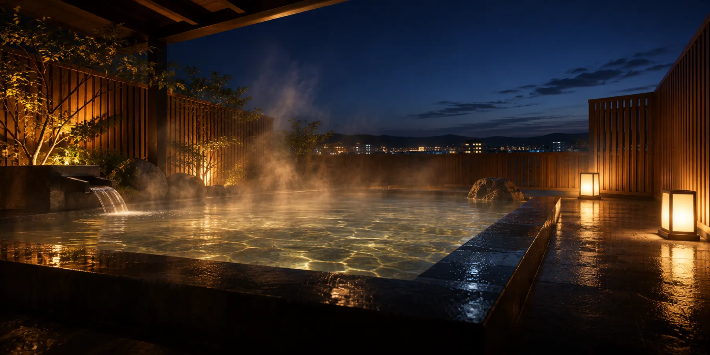

持ち物とお支払い


- 手ぶらで行けますか
- 行けます。シャンプー・コンディショナー・ボディソープ・ドライヤーはございます。タオルセット(バスタオルとフェイスタオル)は ¥220 で貸し出します。ご持参いただいても構いません。
- 支払いは先ですか、後ですか
- お帰りのときです。受付ではお支払いいただきません。館内で使ったぶんは下足箱の鍵(リストバンド)に記録され、精算機でまとめてお支払いいただきます。
- 予約は要りますか
- 日帰りのご入浴は予約なしでお入りいただけます。カプセルでお泊まりの場合はご予約が必要です。
入浴について


- 刺青があっても入れますか
- シールで隠していただければお入りいただけます。カバーシールはフロントで ¥220(10×15cm)。3枚で隠れない場合は、申し訳ありませんがご入浴をお断りしています。遠方からお越しになる前にご確認ください。
- 水着で入れますか
- 入れません。浴場は男女に分かれており、みなさま裸でご入浴いただきます。
- 子どもは何歳から入れますか
- 3歳から。小学生までは同性の18歳以上の保護者の方とご一緒にお願いします。小学生からの混浴はできません。
- サウナは追加料金ですか
- 入浴料に含まれます。サウナハットとポンチョは数に限りがありますが無料でお貸しします。
行き方と駐車場

最寄りと乗り物
最寄り駅小田急 相模大野駅
路線小田原線・江ノ島線
出口北口から
駐車場ご用意します
駐輪場ご用意します
駐車場の台数と無料になる時間、駅からの徒歩分数は、開業までにこのページでお知らせします。